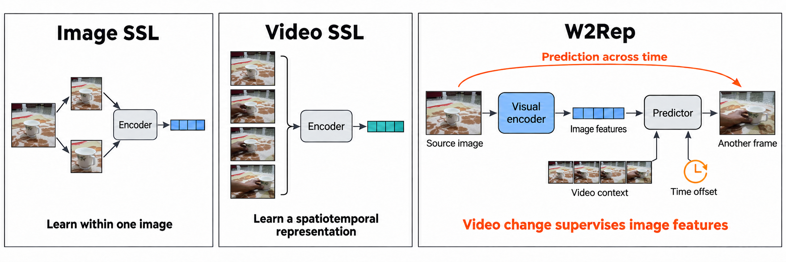
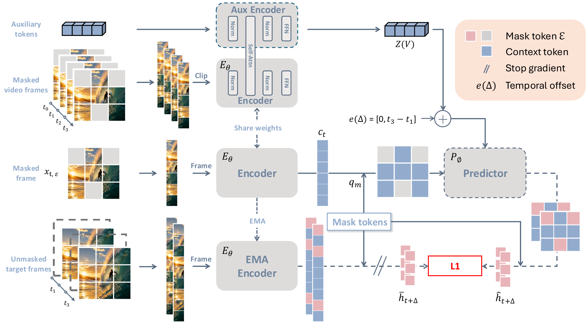
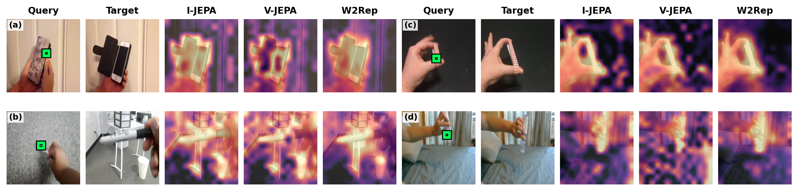
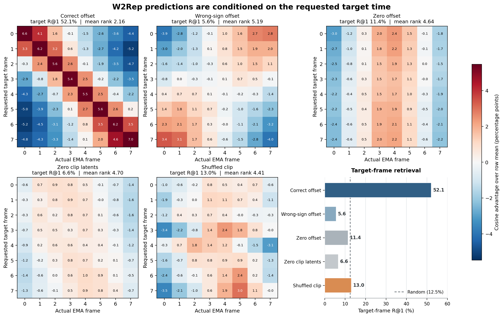
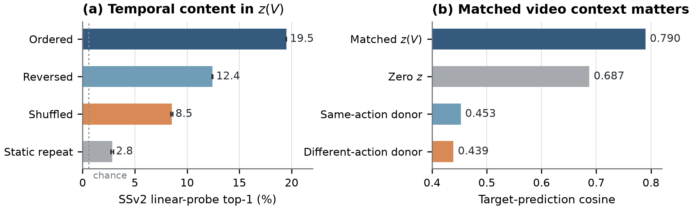

1Tsinghua Shenzhen International Graduate School, Tsinghua University 2Nankai University 3Shenzhen University *Equal contribution †Corresponding author

Different roles for video. Image SSL learns within one image, while conventional video SSL learns from a multi-frame input. W2Rep instead asks an independently encoded source image to support prediction at another moment, using visible video context and the requested time offset.
Frame features across time
Following image patches through changing videos
For each video, a fixed patch is selected in the source image. Every frame is then encoded independently, and the heatmap shows the cosine similarity between that source feature and all target-frame patch features.
Pushing a cupPutting a ball into a cupPouring water into a glassOpening a bookPutting a pen into a boxOpening a door
How to read the videos. Each row shows a fixed source image and query patch, the advancing target frame, and the corresponding 28 × 28 similarity map. Every frame is encoded independently; no clip-level forward pass, class token, or auxiliary latent is used.
Abstract
Images capture the world at one moment, whereas video reveals how it changes. Image self-supervision learns spatial structure from a single moment, while video methods commonly learn temporal relationships inside a representation computed jointly from several frames. We ask whether watching a scene change can instead improve features available from one image without sacrificing the ability to represent video.
W2Rep is a masked feature-prediction framework in which an independently encoded source image participates in prediction at the same or another moment. The predictor is conditioned on visible video context, the queried location, and the signed time interval between source and target. After pretraining, the predictor and auxiliary inputs are removed; the retained visual encoder accepts either images or videos.
Method
Prediction across time shapes the retained visual encoder

Encode a source image independently. These are the image features retained for downstream use.
Collect visible video context. A second pass through the same ViT summarizes evidence across the masked clip.
Predict masked target features. The predictor receives source features, video context, spatial queries, and a signed time offset.
Keep only the visual encoder. The learned ViT can later process one image or several frames jointly.
Motion is used as supervision: observations of the same scene at different moments are related through prediction in one learned feature space.
Evidence
What the model learns to use

Cleaner cross-frame correspondence
Patch features computed from individual frames form more localized cross-frame matches for W2Rep in these examples. The visualization complements, rather than replaces, the quantitative transfer evaluations in the paper.

Prediction depends on time and ordered video evidence
The correct signed offset produces a clear diagonal, while wrong offsets, shuffled clips, or removed video context disrupt target retrieval.

The auxiliary latents carry useful clip context
Temporal order affects their action-predictive content, and matched video context supports target prediction better than context borrowed from another clip.
Open-source release
Training and evaluation code
The release contains self-contained W2Rep pretraining, portable checkpoint loading, frozen image and video probes, video fine-tuning, and an optional ADE20K adapter.
The source code is released under Apache-2.0. Pretrained weights are not included in this release; the paper link will be activated when available.
Citation
The final BibTeX entry will be added when the arXiv identifier is assigned.
@article{huang2026w2rep,
title = {W2Rep: Learning Visual Representations by Watching the World Change},
author = {Huang, Wen and Guo, Hang and Yang, Jiarui and Liu, Zheng and Dai, Tao and Xia, Shu-Tao},
year = {2026}
}